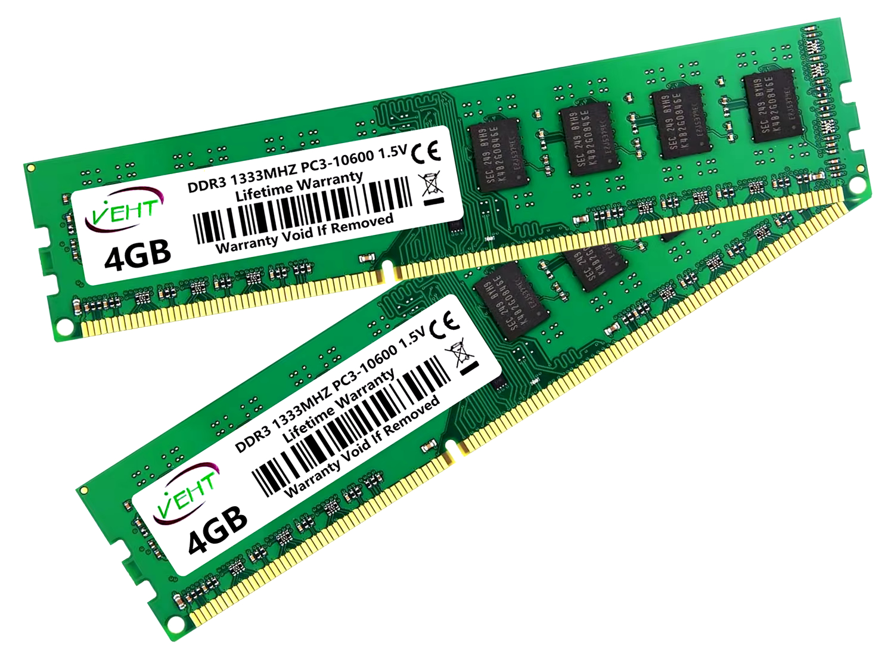
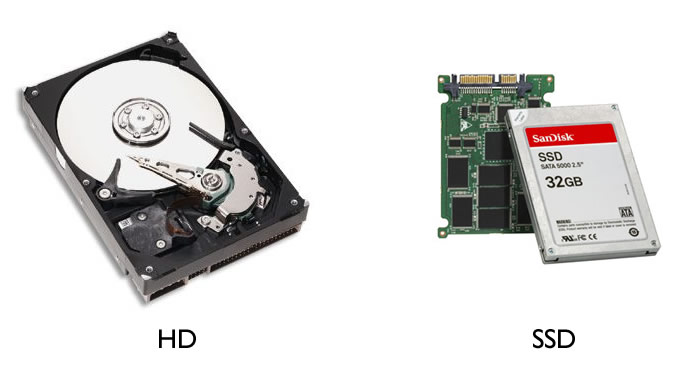
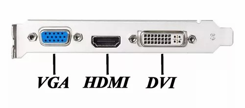

A memória RAM é a que permite o acesso aos arquivos armazenados no computador, ao serem requisitados. É como uma "mesa de estudos" onde reunimos os materiais necessários quanto usamos. Tudo que é registrado nela é apagado ao desligar o computador.
Os pentes de memória que usaremos será a Kingstom Fury Hyperx 2400 Mhz DDR4 4 GB com dissipador, que custa certa de 200 Reais cada. Na verdade, usaremos dois pentes de memória iguais e da mesma marca.
Ao encaixar os pentes na placa-mãe, evite tocar nos contatos e veja a posição certa de encaixe.
Se usar dois pentes, como no caso, sempre use pentes iguais, de mesma quantidade de memória. Ao usar dois pentes, você habilita a tecnologia dual-channel, que dobra a quantidade de bits que são enviados para as memórias, que são enviados simultaneamente. Isso faz a diferença para uso de programas como Photoshop e Android Studio.
Para limpar os contatos dos pentes, caso precise, não utilize a borracha porque com o tempo, ele tira o verniz dos contatos. Utilize um limpa-contato, que é comprado em lojas de eletrônicos. Evite soprar também.
Ao comprar um pente de memória, veja se ela é compatível com a placa-mãe, pegue com a frequência maior. A DDR4 possui características superiores que a DDR3, no caso, usaremos a DDR4, que suporta melhor programas mais pesados. Já existe a DDR5 também, que é superior a DDR4. Isso são gerações da memória RAM, quanto maior, mais nova, mais rápida e mais eficiente.
Só lembrando que um sistema de 32 bits não pode usar mais de 4 GB, apenas de 64 bits podem usar mais.
PS: A memória RAM é o que chamamos de memória física, os sistemas também costumam ter uma memória virtual que utiliza por exemplo, um pendrive ou uma parte do disco rígido, quando a memória RAM física está cheia, geralmente conhecido como Swapfile.
As melhores marcas de memória RAM são: Corsair, Crucial, G.SKill, Kingston, Team Group e XPG.
Veja a imagem da memória RAM:

O HD e o SSD são responsáveis pelo armazenamento de arquivos, programas e tudo tipo de conteúdo utilizado no computador, incluindo o sistema operacional.
O HD escolhido para nosso computador é o Seagate Barracuda, com 7200 RPM e 1 TB, que custa em média 200 Reais. E o SSD escolhido é o WD Green PC SSD, COM 120 GB, que custa em média 250 Reais.
O HD possuí um "disquinho" metálico dentro dele (daí o nome disco rígido), funcionando de forma parecida com uma vitrola mesmo, com dois dispositivos parecidos com a agulha do mesmo, só que ele não encosta no disco, e não pode ter quaisquer partícula dentro dele. Por isso, ele é blindado. Isso faz ele demorar um pouco mais para procurar arquivos.
O SSD utiliza um chip tal como um "pen-drive" mesmo, por isso se torna mais rápido, mas é bem mais caro. Para o sistema operacional e para instalação não faz diferença alguma.
Existem também os HDs e SSDs externos, para back-ups, no caso, prefira o SSD.
No caso, usaremos no computador o SSD para armazenar os programas mais importantes, e o HD para armazenar os arquivos do computador.
Podemos usar dois HDs, ou dois SSDs, ou mesmo um HD com um SSD no mesmo PC, inclusive com os dois funcionando com um só, mas a placa-mãe tem que ser compatível com o raid, nesse caso.
O HD costuma dar mais defeitos que o SSD, com o tempo.
Ao adquirir HDs e SSDs, preste atenção nas séries de "cores", o green é mais pra armazenamento, já que tem desempenho menor, a blue é um intermediário e a black é de maior desempenho, mas gasta mais energia.
As melhores marcas de HD são: Western Digital (WD), Seagate, Toshiba e HGST. Já sobre os SSDs, podemos citar também as marcas Samsung, Crucial, Adata, Sandisk e Kingston.
Veja a imagem do HD e do SSD:

Um monitor ideal para programar deve ser widescreen, mas não é quesito obrigatório, só que estes ajudam a visualizar melhor algumas IDEs.
No exemplo, usaremos um de 21 polegadas, com conexão de vídeo DVI (que é considerada a melhor), mas as mais usadas são VGA e HDMI (desses dois, prefira o HDMI). Fuja de marcas alternativas.
Veja a imagem desses conectores:

Basicamente, um monitor só usa o cabo de vídeo e o de energia. A frequência normalmente vem em 60 hz (quadros), mas é ideal usar cerca de 75 ou mais.
O teclado e o mouse não tem muitas especificações, mas é bom procurar ver a posição das teclas, que alguams vezes podem mudar, mas isso é mais do gosto do usuário.
Caso pegue mouse e teclado sem fio, prefira os que usem apenas um USB. O DPI do mouse deverá ser maior para telas maiores, principalmente pra usar em TV.
Pode ser interessante mouse com mais botões, principalmente pra quem é profissional e quer colocar atalhos nos mouses, mas é dispensável. Só evite escolher mouses e teclados muito baratos.
Caixas de som pode ser uma mais básica, mas não pegue uma muito ruim. Opções mais caras e com mais recursos são necessárias para quem trabalha com áudio ou quer uma qualidade sonora melhor.
As melhores marcas de monitor são AOC, Acer, Asus, AsRock, além de marcas consolidadas em outros eletrônicos como Samsung e LG.
Sobre teclados e mouse, as melhores marcas são Logitech, Razer, HyperX, ReDragon, SteelSeries e marcas consolidadas em outros eletrônicos como Philips e Samsung.
Até para não apoiar pirataria (já que isso prejudica o desenvolvedor do software), o Windows no nosso computador será original, você pode comprar ou baixar em qualquer lugar, mas é recomendado baixar do site da Microsoft. No caso o serial deve ser original, comprado em loja. No caso, usaremos o Windows 10 Pro, que custa cerca de 120 Reais.
Também teremos o Karpersky Antivirus 2017, que também terá serial original comprado em loja, custando cerca de 50 Reais, válido por um ano. Antivírus não são 100% confiáveis, mas pra quem entra em inúmeros sites ou compartilha computadores com outras pessoas, é recomendado usar ele. Até porque um profissional conhece os riscos de segurança e procura tomar cuidado, mesmo não possuíndo antivírus. Podemos usar um antivírus gratuito também.
Caso precise do Office, podemos usar softwares livres como o Libreoffice, mas podemos comprar o Office também.
A maioria dos softwares dedicados à programação usados serão gratuitos, como o Netbeans, Xampp, Android Studio, Pycharm e Codeblocks.
O gabinete é importante pra o computador, pois é onde será instalado a placa-mãe e os componentes, de forma que eles fiquem protegidos.
O modelo do gabinete deve ser compatível com a placa-mãe, apesar de alguns gabinetes terem vários tipos de furações de parafusos para as mais diversas placas. No caso nosso, usaremos uma placa-mãe ATX.
A primeira coisa a se montar no computador é a placa-mãe, que pode ser montada fora do gabinete, mas tome cuidado pra montar em cima de algo que não contém energia estática.
Vamos colocar primeiro o processador, tome cuidado com a trava dele, que contéum uma alavanca, verifique o lado certo do processador para colocar ele no local, e não force.
O cooler que será colocado em cima do processador não poderá terá muita pasta térmica, apenas o suficiente para entrar nos microburaquinhos (não visíveis) do processador (caso precise retirar o dissipador, não precisa reaplicar a pasta, apenas se ela secar depois de muito tempo). Ele também tem posição certa, e as presilhas do mesmo idem, que são empurradas para encaixar. E conecte o cabo de alimentação dele na placa-mãe.
Para colocar os pentes de memória, tem também uma presilha no local onde as memórias serão colocados, e eles também tem posição certa.
Observe que o gabinete, dependendo do padrão (por exemplo, ATX), tem os furos definidos para cada tipo e placa-mãe, para colocar as porcas e parafusos com o auxílio de uma chave canhão.
Antes de colocar a placa-mãe, devemos soltar ou mesmo quebrar as "grades" do gabinete para passar os conectores, se necessário.
Veja a posição do espelho para a placa-mãe (que também depende do padrão) e encaixe no espaço aberto nele. Cuidado que esse espelho tem a borda cortante.
Encaixamos a placa-mãe e parafusamos elas (com os mesmos parafusos que vem com o gabinete). Observe que os parafusos são lisos abaixo (diferente dos que fecham o gabinete que tem ranhuras). Coloque todos eles. Cuidado pra chave não escapar e arranhar ela.
A fonte será colocada por último, já que os cabos tem as canaletas para eles passarem, economizando assim espaço e aproveitando melhor a refrigeração. Ela não será colocada agora.
O gabinete tem as gavetinhas para colocar o SSD e o HD, cuidado com o encaixe e a posição dos conectores, geralmente são de encaixe.
Alguns gabinetes tem um compartimento para colocar a fonte, mas o mais importante é verificar a opsição da ventoinha, que deverá estar virada para fora.
Tem vários cabos, cada um para um componente específico. Cada cabo também tem os locais certos para passar, e os enforca-gatos são usados para prender os cabos no gabinete.
Vamos ligar os coolers, e depois os HDs. Depois ligaremos a placa-mãe com os dois cabos, o de 24 e o de 4 pinos, os de USB, o de áudio, os de LED (indicação de ligado) tudo na placa-mãe.
Lembrando que a organização dos cabos não é só estética, e sim para ajudar a circular melhor o ar.
Na placa-mãe tem um auto-falantezinho que emite um apito ao ligar, dependendo do padrão de apito, ele indica defeitos diferentes, algumas placas costumam ter um displayzinho para isso.
Os cabos não podem passar um em cima do outro, eles deverão ser organizados corretamente para não embaralhar.
Pra prender os cabos, usamos os enforca-gatos, que os prendem no gabinete. Não são todos os gabinetes que tem espaço para passar os cabos, mas isso é importante para não esquentar demais o gabinete.
Até o momento, tínhamos 2300 Reais para gastar no PC. Esse foram os gastos até agora:
O resultado final foi de R$ 2180, conseguimos ficar dentro do orçamento.
Outros recurso como placa de vídeo, placa de som (essas duas últimas costumam ser integradas em outros componentes), placa de captura e unidade de DVD depende mais de suas necessidades, por isso não foram colocados no orçamento.
Primeiro, baixe, por outro dispositivo, a ISO do Windows 10 nesse link: https://www.microsoft.com/pt-br/software-download/windows10
Como no caso o computador não terá drive de CD/DVD. Vamos colocar a ISO num pen-drive para instalar, o download é grátis, apenas para usar é necessário ter uma licença paga, que pode ser comprada separadamente e colocada depois. No nosso caso será o Windows 10 Pro 64 bits.
Ao baixar a ferramenta, ele dá a opção de atualizar o PC ou criar uma mídia de instalação com essa ISO.
Para criar um pen-drive bootável, baixaremos o YUMI nesse link: https://www.pendrivelinux.com/yumi-multiboot-usb-creator/
Ao usar o pen-drive, pegue um que esteja vazio e formate com FAT32, a mesma formatação usada para, por exemplo, colocar arquivos de músicas para rádios e dispositivos. A NTFS é mais rápida, mas não é recomendada nesse caso.
Escolha o Windows baixado e a ISO e espera ele criar as partições do pen-drive.
PS: É mais recomendável usar a ferramenta da própria Microsoft para criar o pen-drive, que já é baixada junto com a ISO.
Ligue o PC, nós veremos o setup do computador, que ainda está sem sistema operacional. Habilite o XMP, que identificará as características de memória RAM e a configurará automaticamente. Podemos fazer outros ajustes como o da velocidade dos coolers, por exemplo. Ajuste também a prioridade de boot para ele iniciar primeiro pelo pen-drive (pode ter que desativar o EFI para permitir isso).
Desligue o PC, coloque o pen-drive e ligue de novo. Se for o caso, clique em F8 ou F12 para escolher o pen-drive para boot.
Assim que o pen-drive for identificado, ele pedirá a instalação do Windows, daí é só seguir as instruções.
Escolha a opção Português - Brasil e a configuração de teclado ABTN-2, depois ele pedirá a chave de ativação (que pode ser inserida depois, dentro do prazo de 30 dias).
Não escolha a opção Atualização, já que esta pegará arquivos do Windows anterior e tentará substituir, o que pode dar bugs, escolha a Personalizada.
Ele pedirá o local onde o Windows será instalado, no caso, escolheremos o nosso SSD para isso.
No caso, nosso SSD será particionado em duas partes iguais, para separar os arquivos de trabalho das de diversão.
PS: O Windows, ao identificar outro Windows instalado na máquina, ele fará o back-up de tudo automaticamente.
Instale o Windows no SSD e aguarde alguns minutos até terminar a instalação. Ele fará a atualização e reiniciará automaticamente.
Após a instalação, escolha a região (país) como Brasil, o teclado como Português ABTN2, conecte a rede, se quiser baixar atualizações (pode ser configurada posteriormente), crie o nome do administrador, a senha e uma dica pra mesma. Não torne a Cortana a assistente pessoal (é tipo um "keylogger" da própria Microsoft), desative todas as opções nas configurações de privacidade (pois essas enviam dados pra Microsoft). Após a instalação ele iniciará automaticamente. Após isso podemos remover o pen-drive.
PS: O Windows 10 pode exigir login na conta Microsoft para associar ela ao usuário do sistema. Caso não queira fazer isso, desative a internet até que a instalação seja concluída, que nesse caso ele criará a conta local no sistema. Podemos marcar a opção "Eu não tenho internet" também, para evitar o login na conta de e-mail.
O Windows identificará os componentes e inicializará, os drivers são configurados automaticamente.
No caso, tudo que instalarmos no Windows irá pro SSD e os arquivos pro HD (este terá que ser formatado em NTFS).
Para particionar o disco, clique com o botão direito na unidade onde está o Windows instalado, e reduza o volume para cerca de metade dele, e aparecerá uma metade da cor preta com o nome "não alocado" (onde está vazio, e será instalado nosso Linux). Clique com o botão direito na unidade de arquivos com partições não formatadas (com o nome RAW), e podemos formatar as partições que estão, clicando com o botão direito na unidade, e escolha a opção NTFS, podemos escolher a letra que identifica a unidade também.
Para quem não quer gastar com a licença de Windows e nem crackear o mesmo, podemos utilizar o Linux que é um SO totalmente livre. Temos várias distribuições Linux que podemos utilizar (por exemplo, Mint, Fedora, Debian e outros), no exemplo instalaremos o Ubuntu, que é uma das mais populares e mais simples de mexer.
Primeiramente baixe a imagem ISO do Ubuntu, no exemplo, será o Ubuntu 22.04 LTS (que é de suporte longo) 64 bits. Baixe nesse link aqui: https://www.ubuntu.com/download/desktop
Como nossa máquina não terá drive de CD/DVD, usaremos um pen-drive para instalar o Linux, tal como fizemos com o Windows. Aproveitando o YUMI, que baixamos anteriormente, clique nele para criarmos nosso pen-drive para o Linux, selecione o pen-drive, formate ele em FAT32, escolha a opção da nossa imagem (no caso Ubuntu) e selecione nossa imagem, e espere ele criar as partições no pen-drive.
Podemos também fazer um dual-boot, onde nosso computador terá os dois sistemas.
Vamos instalar o Linux em uma máquina que já tem o Windows, para fazermos o dual-boot entre os dois sistemas.
Entre no Windows, vá no Painel de Controle, vá em Hardware e em Opções de Energia, em Configurações do Sistema e em Configurações de Energia Adicionais, e vamos desabilitar a "ligar inicialização rápida" e desabilitar a opção "hibernar". Pode ser necessário também rodar o comando powercfg.exe /hibernate off no CMD, como administrador.
Vamos abrir o Gerenciamento de Disco, e veja na formatação de disco, o disco 0 (no caso o HD) e veja as partições dele, e diminua o volume da unidade onde o Windows está instalado, para criar um espaço vazio (cerca de metade), na qual será criada a partição do Linux.
Agora pegaremos o pen-drive preparado pro Linux, plugaremos ele no computador e reiniciará, entre na BIOS (pode ser usando F1 ou F2, ao iniciar, dependendo do fabricante da placa-mãe), e coloque o pen-drive como o primeiro na prioridade de boot, e continue o boot.
Ele abrirá o menu do Multiboot e escolha a opção Linux Distributions, e escolha o sistema a ser instalado (o nosso Linux, no caso o Ubuntu).
Ele carregará o sistema e aparecerá a tela de instalação (escolha a opção Safe Graphics), escolha o idioma Português do Brasil, e escolha o Instalar o Ubuntu. Marque a opção instalar softwares de terceiros (wi-fi, Flash, MP3), não é necessário baixar atualizações no momento, podemos baixá-las posteriormente.
Ele já detectará que o nosso computador tem o Windows instalado e deverá aparecer marcado, essa opção instalará na partição vazia criada anteriormente. Se tiver um entendimento melhor de particionamento, podemos escolher a Opção Avançada. Depois clique em Instalar Agora.
PS: Caso a instalação do Linux não identifique o Windows, no tipo de instalação, escolha opção avançada e instale na partição não-alocada, escolha usar sistema de arquivos ext4, marque formatar e coloque o ponto de montagem como /.
Ele pedirá para escolher o fuso horário, e depois o tipo do teclado (no caso, Português do Brasil), se quiser, tem um espaço para testar o que for digitado. Coloque o nome do Usuário, o nome do computador e sua senha. Não é necessário marcar a opção Criptografar Minha Pasta Pessoal. Depois disso ele começará a instalação.
Depois da instalação, reinicie e retire o pen-drive, ele aparecerá a tela GNU GRUB do Ubuntu com as opções de boot, inclusive a do Windows instalado anteriormente. Faça o boot pelo Ubuntu, digite a senha e entre no sistema.
PS: Para não haver conflitos no relógio do Windows e do Linux, adicione essa entrada no registro:
reg add HKLM\SYSTEM\CurrentControlSet\Control\TimeZoneInformation /v RealTimeIsUniversal /t REG_QWORD /d 1
Lembrando que se for Windows 32 bits o tipo é REG_DWORD, e 64 bits é REG_QWORD.
O Linux tem opções de personalização, podemos baixar uma outra interface gráfica e algumas versões tem loja de aplicativos. Muitos programas tem suas versões Linux, inclusive a maioria das IDEs que instalaremos, alguns programas tem versões equivalentes (como o Libreoffice que é uma alternativa ao Office).
PS: Caso tenha necessidade de remover o dual-boot do Linux, você pode remover ele sem afetar o Windows, nesse caso você deverá entrar no Windows e excluir as partições referentes ao Linux e estender o espaço não alocado novamente pra partição do Windows. Após isso você deve usar um disco de reparação do sistema Windows, escolha o idioma Português do Brasil, vá em Reparar o Computador, nas Opções de Recuperação de Sistema, escolha a partição com o Windows, e nas opções, vá em Prompt de Comando e digite o comando bootrec /fixmbr e dê enter, e reinicie. Caso não dê certo, volte nas opções e vá em Correção de Inicialização, clique nela e após a conclusão, reinicie. Se não conseguir, tente esses comandos na ordem:
bootrec /fixmbr
bootrec /fixboot
bootrec /scanos
bootrec /rebuildbcd
No Windows não tem segredo, é clicar nos instaladores e avançar, os programas instalados foram o Portugol Studio, Sublime Text, Xampp, Netbeans, Pycharm, Codeblocks, Visual Studio, IntelliJ IDEA e Android Studio (e tudo que é necessário pra algumas funcionar, como o JDK e o Python).
PS: No setup da máquina, vá em advanced e habilite o uso de máquinas virtuais, que é a virtualização de máquinas, já que o Android Studio usa muito ele.
Teste todas as IDEs com alguns programas simples. Como exemplo usamos um programa que some dois números pra cada uma das linguagens.
Periodicamente, temos que abrir uma máquina para fazermos uma limpeza preventiva nela.
Primeiro, abra o gabinete e limpe o pó dela com um pincel anti-estática, podendo usar um aspirador pra soprar o pó em partes como a da ventoinha. Na parte de fora podemos passar o limpa-contato e depois limpar com um pano o excesso de sujeira.
Com o limpa-contato, retire e limpe as placas de vídeo, RAM, processador e outros contatos. Não ligue o PC logo após usar o limpa-contato, aguarde pelo menos uns 20 minutos. No caso do processador, reaplique a pasta térmica ao colocar ele de volta.
Após a conclusão, feche o gabinete.
PS: É melhor utilizar uma pulseira anti-estática para mexer no computador.